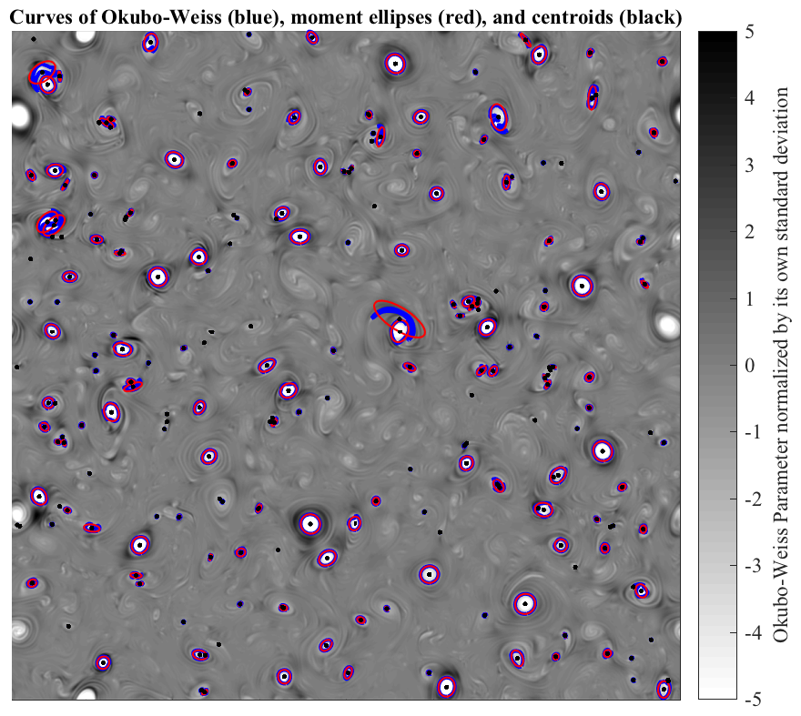

CURVEMOMENTS Centroid, area, and many other moments of a closed curve. _______________________________________________________________________  ______________________________________________________________________ CURVEMOMENTS returns various moments of a closed curve. These occur in two sets, moments of the curve itself, and moments of the velocity meausured along the curve. __________________________________________________________________ Curve moments: Centroid, arc length, area, moment of inertia, etc. [XO,YO,KAPPA,R,L,A,B,THETA]=CURVEMOMENTS(XC,YC), where the closed curve is specified by the column vectors XC and YC, returns the following: XO -- X-component of the centroid of the enclosed region YO -- Y-component of the centroid of the enclosed region KAPPA -- root-mean-square distance from the curve to the centroid R -- area radius, defined such that pi R^2 is the enclosed area L -- arc length along the curve A -- major axis of the area moment of inertia B -- minor axis of the area moment of inertia THETA -- orientation angle of the area moment of inertia Note that the last three quantities describe the area moment of inertia as an ellipse with semi-axes length A and B, and orientation THETA. The moments are calculated from the curve (XC,YC) using expressions for converting spatial to line integrals derived from Green's theorem. XC and YC may be matrices, with each column specifying a different closed curve. In this case, all curves must contain the same number of points, corresponding to the rows. No NaNs may be present. XC and YC may also be cell arrays of column vectors. In this case, the moments will be numerical arrays with the same lengths as XC and YC. The above figure illustrates an application of CURVEMOMENTS to a quasigeostrophic eddy field from QGSNAPSHOT. The blue curves are curves of constant Okubo-Weiss parameter. These are well matched by the red curves, constructed from the second central moment quantites A, B, and THETA, and centered at the curve centroids XO, YO. __________________________________________________________________ Velocity moments: Vorticity, angular momentum, kinetic energy, etc. CURVEMOMENTS can also compute various moments based on the velocity. [ZETA,DIV,SIGMA,NU,MOM,KE]=CURVEMOMENTS(XC,YC,ZC) where ZC is the complex-valued velocity ZC=U+iV along the curve, returns the following: ZETA -- spatially-averaged vorticity DIV -- spatially-averaged divergence SIGMA -- spatially-averaged shear strain NU -- spatially-averaged normal strain MOM -- average angular momentum along the curve KE -- average kinetic energy along the curve For the velocity moments, CURVEMOMENTS expects XC and YC to have units of km while ZC is in cm/s. ZETA, DIV, SIGMA, and NU then have units of 1/s, MOM and MOMSTD have units of cm^2/s, and KE has units of cm^2/s^2. Note that ZETA and DIV are computed as integrals of the tangential and normal velocities along the curve, respectively, then converted to area averages by applying Stokes' theorem and the divergence theorem. The strain components SIGMA and NU are similarly computed using an extended version of Stokes' thereom derived by Lilly (2018). MOM is the average angular momentum along the curve with respect to the curve centroid. KE is the average value of the kinetic energy along the curve, a velocity quantity analagous to averaged squared distance D^2. __________________________________________________________________ See also CLOSEDCURVES, CURVEINTERP. 'curvemoments --t' runs some tests. 'curvemoments --f' generates the above figure. Usage: [xo,yo]=curvemoments(xc,yc); [xo,yo,kappa,R,L]=curvemoments(xc,yc); [xo,yo,kappa,R,L,a,b,theta]=curvemoments(xc,yc); [zeta,div,sigma,nu,mom,ke,momstd]=curvemoments(xc,yc,zc); __________________________________________________________________ This is part of JLAB --- type 'help jlab' for more information (C) 2013--2015 J.M. Lilly --- type 'help jlab_license' for details